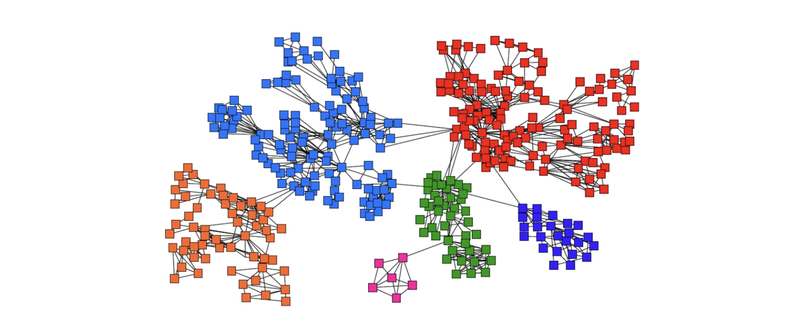
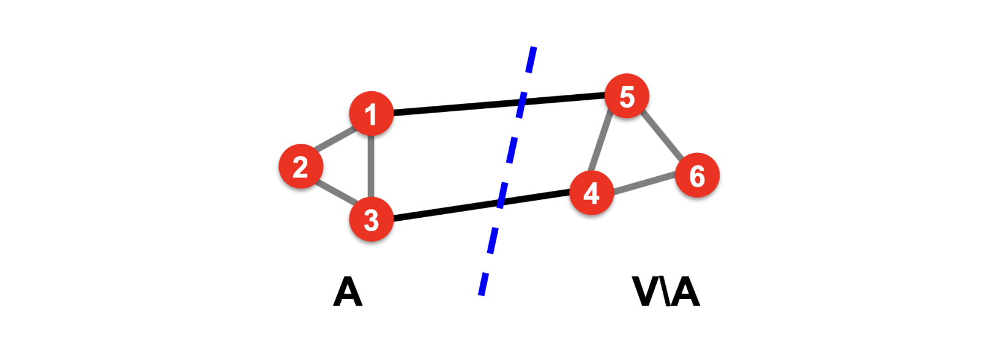
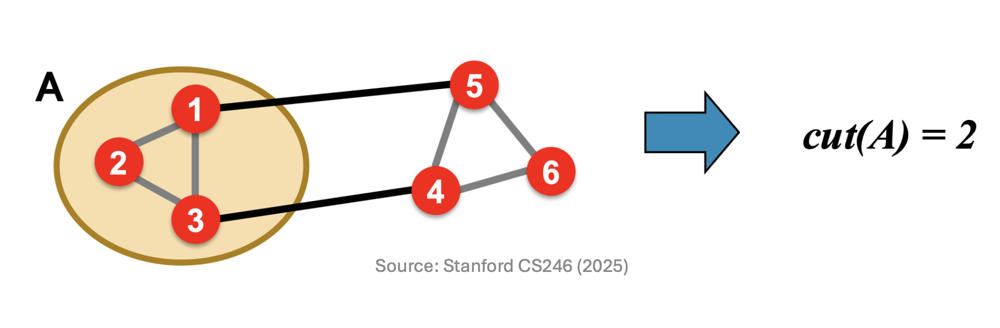
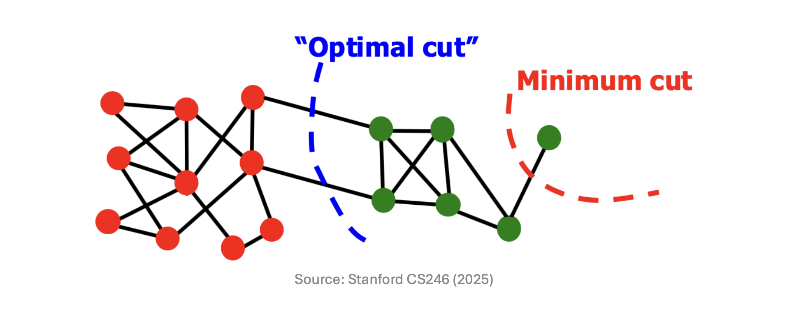
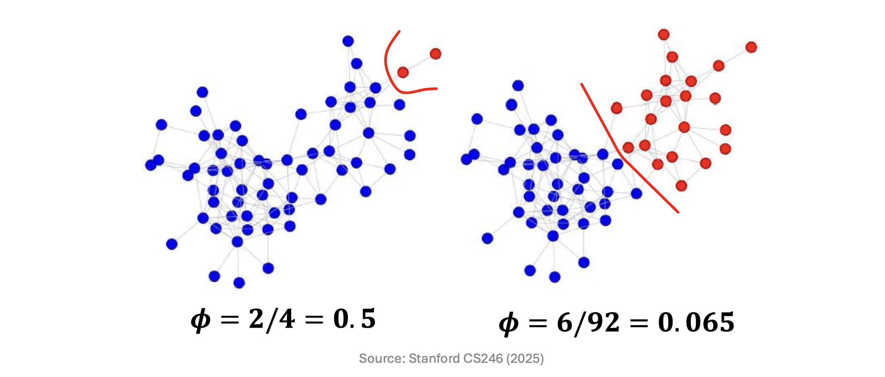

1. Introduction: 거대 네트워크와 커뮤니티 탐지
이전 포스트에서는 검색 엔진이 Link Spam을 방어하기 위해 어떻게 랜덤 워크를 변형하여 TrustRank와 Topic-Specific PageRank를 고안해냈는지, 그리고 특정 노드와의 네트워크상 ’근접성(Proximity)’을 측정하는 Personalized PageRank(PPR) 모델의 원리를 확인했습니다.
이번 포스트에서는 한 걸음 더 나아가, PPR 점수를 활용하여 네트워크 내부의 숨겨진 군집(Community)을 찾아내는 알고리즘을 다룹니다. 현실 세계의 소셜 네트워크나 인용 네트워크는 무작위로 연결되어 있지 않으며, 비슷한 특성을 공유하는 노드들이 특정한 군집(Community) 구조를 이룹니다.

- 거대한 그래프 데이터에서 의미 있는 커뮤니티를 수학적으로 정의하는 방법과, 메모리 한계를 극복하기 위해 제안된 ‘국소 커뮤니티 탐지(Local Community Detection)’ 기법 및 Sweep Algorithm을 자세히 살펴보겠습니다.
2. 좋은 커뮤니티(Good Cluster)의 기준과 Cut Score
공간상의 점(Points)을 거리 기반으로 묶는 일반적인 클러스터링과 달리, 그래프 상의 노드(Nodes)를 묶는 커뮤니티 탐지는 ‘간선(Edges)의 연결성’을 핵심 기준으로 삼습니다.
무방향 그래프(Undirected graph) \(G=(V, E)\)가 주어졌을 때, 이상적인 커뮤니티는 다음 두 가지 직관적인 조건을 동시에 만족해야 합니다.
- 내부 연결의 극대화: 군집 내부의 노드들끼리는 서로 촘촘하게 얽혀 있어야 합니다.
- 외부 연결의 최소화: 군집 외부에 있는 노드들과는 연결선이 최대한 적어야 합니다.
이러한 조건 중 ’외부 연결의 최소화’를 수학적으로 수치화한 지표가 바로 Cut Score입니다.
2.1. Cut Score의 정의와 계산
- 노드 집합 \(V\)를 우리가 평가하려는 군집 \(A\)와 나머지 외부 집합 \(V \setminus A\)로 분할했다고 가정해 보겠습니다.

- 이때 \(A\)의 Cut Score는 \(A\) 내부 노드와 \(A\) 외부 노드를 가로질러 연결하는 간선들의 총합으로 정의됩니다. 수식으로는 다음과 같이 표현됩니다.
\[cut(A) = \sum_{i \in A, j \notin A} a_{ij}\]

2.2. Cut Score 최적화의 한계 (Minimum Cut Problem)
군집 분할을 위해 단순히 Cut Score 수치를 최소화(Minimum cut)하는 최적화를 수행하면, 수학적 맹점으로 인해 알고리즘이 망가지게 됩니다.
Cut Score는 ’외부로 나가는 선이 몇 개인가?’에만 집착할 뿐, ’군집 내부의 결속력(intra-cluster connectivity)’은 전혀 고려하지 않습니다. 그 결과, 거대한 네트워크를 의미 있는 덩어리로 쪼개는 대신 연결선이 하나뿐인 주변부 말단 노드(Degree-1 node) 하나만 잘라내는 편법을 선택하게 됩니다.

3. Conductance (전도도): 완벽한 군집 평가 지표
- Cut Score의 한계(Minimum Cut)를 극복하기 위해 등장한 보다 완벽하고 균형 잡힌 분할 지표가 바로 Conductance (전도도, \(\phi\))입니다. Conductance는 외부로 향하는 컷의 크기를, 해당 군집이 품고 있는 간선의 밀도(Volume)로 나누어 페널티를 부여합니다.
3.1. Volume과 Conductance 수식
- 어떤 노드 집합 \(A\)의 볼륨 \(vol(A)\)는 해당 집합에 속한 모든 노드들의 차수(Degree, \(d_i\)) 총합입니다.
\[vol(A) = \sum_{i \in A} d_i\]
- 이 \(vol(A)\) 값은 (집합 A 내부에서 서로 연결된 간선 수 \(\times 2\)) + (외부로 뻗어나가는 간선 수)와 정확히 일치합니다.
- 이를 바탕으로 Conductance \(\phi(A)\)는 다음과 같이 계산됩니다. \[\phi(A) = \frac{cut(A)}{\min(vol(A), 2m - vol(A))} = \frac{|\{(i, j) \in E \mid i \in A, j \notin A\}|}{\min(vol(A), 2m - vol(A))}\]
- 단, \(m\)은 그래프 전체의 간선 수이며, \(2m\)은 그래프 전체의 총 Volume을 의미합니다.
3.2. Conductance가 문제를 해결하는 원리
- Conductance 수식은 분모에 \(\min(vol(A), 2m-vol(A))\)를 취하여 군집의 규모를 평가합니다.
- 앞선 Minimum Cut 문제처럼 말단 노드 단 하나만 잘라낼 경우, 컷은 1(혹은 2)로 작아지지만 분리된 군집의 내부 볼륨 역시 극히 작아집니다. 결과적으로 분모가 아주 작아져 \(\phi(A)\)는 거의 1에 가까운 최악의 점수를 받게 됩니다. 반면 내부가 촘촘한 거대한 덩어리로 나누면 분모가 기하급수적으로 커져 \(\phi(A)\)는 0에 가깝게 낮아집니다.

- 즉, Conductance \(\phi(A)\)가 0에 가까울수록 내부 결속력은 탄탄하고 외부 유출은 적인 이상적인 커뮤니티 구조임을 뜻합니다.
4. Local Community Detection (국소 커뮤니티 탐지)
Conductance를 통해 최적의 군집을 평가할 수 있게 되었으나, 이를 현실의 초거대 소셜 네트워크(노드 수억 개, 간선 수십억 개)에 적용하면 전역(Global) 탐색에 천문학적인 메모리와 시간이 소모됩니다.
이러한 연산의 한계를 돌파하기 위해 고안된 것이 Local Community Detection (국소 탐지 기법)입니다. 전체 네트워크를 분석하는 대신, 특정 시드 노드(Seed Node) \(s\)를 부여하고 오직 그 노드가 속한 지역 커뮤니티 하나만을 빠르고 정확하게 찾아내는 접근법입니다.

- 국소 커뮤니티 탐지의 가장 중요한 목표는 알고리즘의 시간 복잡도를 전체 그래프의 크기 \(|V|\)나 \(|E|\)가 아니라, 발견하고자 하는 로컬 커뮤니티 집합 크기 \(|A|\)에 선형적으로 비례하도록(Linear time) 억제하는 데 있습니다.
5. The Sweep Algorithm (스윕 알고리즘)
- 앞서 배운 Personalized PageRank(PPR) 모델과 Conductance 개념을 합치면, 로컬 군집을 선형 시간에 찾아내는 기발한 Sweep Algorithm이 완성됩니다.
5.1. 알고리즘 동작 원리
- PPR (근접성) 계산: 시드 노드 \(S=\{s\}\)로 텔레포트를 100% 한정시킨 Random Walk with Restarts를 실행하여, 모든 노드들이 시드 노드 \(s\)와 가지는 네트워크 근접성(PPR score)을 계산합니다.
- 정렬 (Sort): 계산된 PPR 점수가 높은 순서(내림차순)로 노드들을 줄 세웁니다.
- 스윕 (Sweep): 상위 노드부터 하나씩 새로운 군집 \(A_i\)에 집어넣어가며 그 순간의 Conductance \(\phi(A_i)\)를 측정합니다.
- \(A_1 = \{u_1\}\)
- \(A_i = \{u_1, u_2, \dots, u_i\}\)
- 로컬 미니마(Local Minima) 판별: \(\phi(A_i)\) 값을 그래프로 그렸을 때, 값이 크게 하락하여 골짜기를 이루는 점(Local minima)들이 발견됩니다. 이 지점들이 바로 이상적인 군집의 경계(Good clusters)를 의미합니다.

5.2. 선형 시간(\(O(|A|)\)) 처리를 위한 동적 갱신(Update) 식
매 \(i\)번째 스윕 단계마다 집합 \(A_i\)의 \(vol\)과 \(cut\)을 처음부터 다시 센다면 연산 시간이 비효율적으로 증가합니다. 이를 해결하기 위해 새로운 노드 \(u_{i+1}\)이 추가될 때 이전 단계의 값을 활용하여 빠르게 업데이트하는 점화식을 사용합니다.
Volume 업데이트: 단순 합계입니다. 새 노드의 간선 수를 기존 볼륨에 더합니다. \[vol(A_{i+1}) = vol(A_i) + d_{i+1}\]
Cut 업데이트: 새 노드의 모든 간선은 일단 외부를 향하는 컷으로 간주하여 더합니다. 하지만 그중에서 기존 집합 \(A_i\)를 향하는 내부 간선들은 컷의 성질을 잃게 되므로 그 개수의 2배를 빼줍니다 (기존에 밖으로 나가던 컷 1번 상쇄 + 방금 들어오면서 컷으로 추가했던 것 1번 상쇄). \[cut(A_{i+1}) = cut(A_i) + d_{i+1} - 2 \times (\text{\# of edges from } u_{i+1} \text{ to } A_i)\]
어떤 이웃 노드 \(v\)가 이미 집합 \(A_i\) 안에 있는지 확인하는 작업은 1과 0을 반환하는 상수 시간 \(O(1)\)의 해시 테이블(Hash table, \(h(v)\))을 사용하여 즉각적으로 판별합니다. 이러한 트릭 덕분에 대규모 네트워크에서도 타겟 커뮤니티를 찾아내는 연산이 완벽한 선형 시간 내에 종료됩니다.